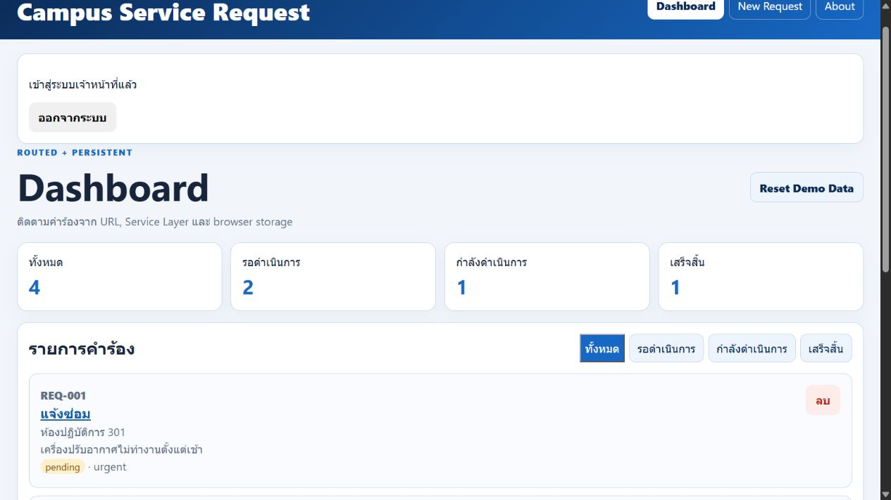

LAB13 — Quality & Security
ENGSE203 · 68543210062-4
Checker 27/27 · API 71 tests · Frontend 6 tests · Coverage 87.5%
Validation · scrypt · JWT login · 401/403 · fail-fast secret · rate limit · security headers
หน้านี้เป็นรายงาน static สำหรับ GitHub Pages. ระบบ Express/SQLite ทดสอบในเครื่องแล้ว แต่ยังไม่ได้ deploy Render หรือสร้าง PR/tag จริง
หลักฐานทดสอบ
- AI_ASSISTANCE.md
- AUDIT_API.json
- AUDIT_FRONTEND.json
- BROWSER_TEST.md
- BUILD.txt
- CHECKER.txt
- COVERAGE.txt
- DB_SETUP.txt
- GREEN_API.txt
- GREEN_FRONTEND.txt
- production-login.png
- RED_API.txt
- REFLECTION_PROMPTS.md
- REGRESSION_WEEK12.txt
- TEST_REPORT.md

หน้าเว็บ production ในเครื่อง

ผล checker อาจารย์
POST /api/requests 413 3.342 ms - 448 POST /api/auth/login 200 39.716 ms - 375 POST /api/auth/login 401 31.477 ms - 93 POST /api/auth/login 401 0.329 ms - 93 POST /api/auth/login 401 0.374 ms - 93 PUT /api/requests/REQ-001 401 0.543 ms - 60 PUT /api/requests/REQ-001 401 0.943 ms - 81 PUT /api/requests/REQ-001 403 0.571 ms - 78 PUT /api/requests/REQ-001 200 0.754 ms - 323 DELETE /api/requests/REQ-003 204 0.449 ms - - GET /api/requests 200 0.380 ms - 1662 POST /api/requests 201 0.623 ms - 260 DELETE /api/requests/REQ-002 204 0.338 ms - - POST /api/requests 201 0.444 ms - 260 GET /api/health 200 0.294 ms - 139 POST /api/auth/login 401 30.570 ms - 93 POST /api/auth/login 401 30.893 ms - 93 POST /api/auth/login 401 30.493 ms - 93 POST /api/auth/login 401 33.122 ms - 93 POST /api/auth/login 401 30.284 ms - 93 POST /api/auth/login 429 0.239 ms - 137 ✅ CP48 ชื่อผู้แจ้ง 100 ตัวผ่าน · 101 ตัวถูกปฏิเสธ ✅ CP48 รายละเอียด 1000 ตัวผ่าน · 1001 ตัวถูกปฏิเสธ ✅ CP48 สถานที่ยาวเกิน 100 ตัวถูกปฏิเสธ ✅ CP49 hashPassword คืนรูปแบบ scrypt$salt$hash ✅ CP49 รหัสผ่านเดียวกันได้ hash ต่างกัน (salt สุ่ม) และไม่มีรหัสผ่านจริงปน ✅ CP49 verifyPassword: ถูก → true · ผิด → false ✅ CP49 ตรวจ hash บัญชีเจ้าหน้าที่ใน schema.sql ได้ ✅ CP49 ตาราง users มีคอลัมน์ role และ password_hash ✅ CP48 body ใหญ่เกิน 10kb → 413 เป็น JSON ✅ CP50 POST /api/auth/login ถูกต้อง → 200 พร้อม token (3 ส่วน) ✅ CP50 payload ของ token มี role=staff และ exp · ไม่มีรหัสผ่าน ✅ CP50 รหัสผ่านผิด กับ อีเมลที่ไม่มี → 401 ข้อความเดียวกัน ✅ CP50 ผู้แจ้งทั่วไป (ไม่มีรหัสผ่าน) เข้าสู่ระบบไม่ได้ ✅ CP51 PUT ไม่มี token → 401 ✅ CP51 PUT ด้วย token ปลอม (secret อื่น) → 401 ✅ CP51 PUT ด้วย token ที่ไม่ใช่เจ้าหน้าที่ → 403 ✅ CP51 เจ้าหน้าที่: PUT → 200 และ DELETE → 204 ✅ CP51 GET และ POST ยังไม่ต้องเข้าสู่ระบบ ✅ CP51 ไม่ถอยหลัง · BUG #1 ของสัปดาห์ 12 ยังแก้อยู่ (ลบแล้วเพิ่มใหม่ → 201) ✅ CP52 production ไม่ตั้ง JWT_SECRET → ระบบไม่ยอม start ✅ CP52 production: error ไม่ส่ง stack trace ให้ผู้ใช้ ✅ CP52 .env.example มี JWT_SECRET ค่าว่าง และ .gitignore มี .env (ไม่ commit ค่าลับ) ✅ CP52 npm test ใน api ผ่านทุกข้อ และมี test ของ 401 กับ 403 ✅ CHAL ⭐ มี security header (X-Content-Type-Options: nosniff) ✅ CHAL ⭐ ผิดเกิน 5 ครั้ง → 429 (จำกัดการเดารหัสผ่าน) ✅ CHAL ⭐ frontend แนบ Authorization: Bearer ทุกคำขอ (ทำต่อใน Term Project) ✅ CHAL ⭐ render.yaml ให้ Render สร้าง JWT_SECRET (generateValue) ────────────────────────────────────────────────────────── 🏫 ในห้อง (CP48–CP52) ผ่าน 23/23 รายการ ⭐ Challenge ผ่าน 4/4 รายการ ────────────────────────────────────────────────────────── ผ่าน 27/27 รายการ หมายเหตุ: checker ตรวจพฤติกรรมด้านความปลอดภัยได้ แต่ตรวจไม่ได้ว่าเข้าใจเหตุผล ผู้สอนจะถามว่า 401 ต่างจาก 403 อย่างไร และทำไมต้อง hash รหัสผ่าน